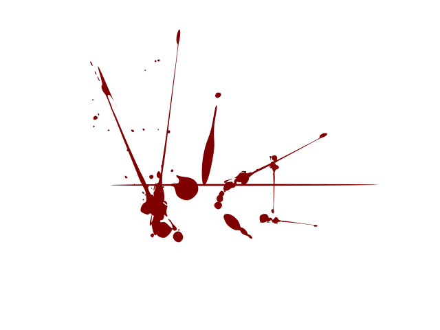
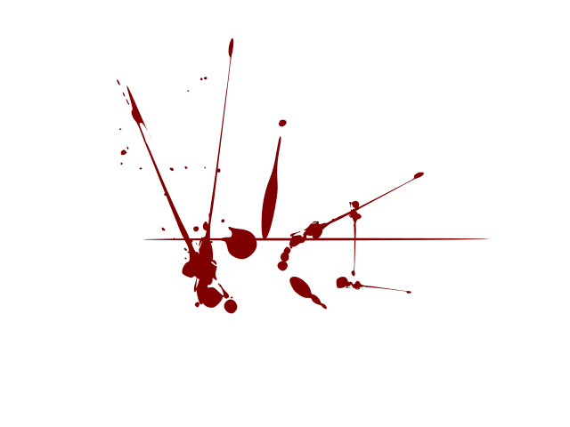

Most of the writing is difficult to make out - with blood stains covering up chunks of text. There is a section toward the bottom that you can read.
...found a bowl in trench eight this morning, this time made
of what we think to be onyx. It matches the shape of the two
we already uncovered and has similar engravings. To be
honest it's all a bit cryptic, but Calador says he thinks they are
the key to unlocking the secrets of this old place. Old
Shatterbone isn't too happy about it, but then again he nev...
 
